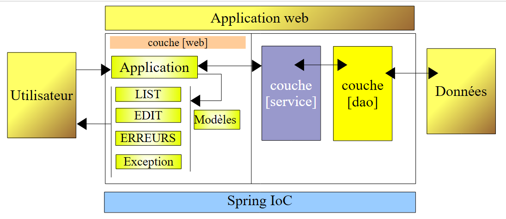

21. Fazit
Fassen wir zusammen, was in diesem Dokument vorgestellt wurde:
- die Grundlagen der Webprogrammierung in Java unter Verwendung von Servlets und JSP-Seiten
- eine Einführung in die MVC-Architektur
- eine Einführung in die 3-Tier-Architektur
- eine Einführung in Spring IoC
- Beispiele zur Veranschaulichung dieser Punkte
Wir gehen davon aus, dass Leser, die bis hierher gekommen sind, bereit sind, ihre eigenen Java-Webanwendungen zu entwickeln. Sie sind auch bereit, sich mit anderen Entwicklungsmethoden auseinanderzusetzen, die denen in diesem Dokument ähneln. Lassen Sie uns die Architektur der hier entwickelten Webanwendungen noch einmal betrachten:
 |
Für einfache Anwendungen ist diese Architektur ausreichend. Sobald Sie mehrere Anwendungen dieser Art geschrieben haben, werden Sie feststellen, dass die Servlets zweier verschiedener Anwendungen
- denselben Mechanismus verwenden, um zu bestimmen, welche Methode [doAction] ausgeführt werden soll, um die vom Benutzer angeforderte Aktion zu bearbeiten
- sich tatsächlich nur im Inhalt dieser [doAction]-Methoden unterscheiden
Die Versuchung ist dann groß,
- die Verarbeitung (1) in ein generisches Servlet auszulagern, das keine Kenntnis von der Anwendung hat, die es verwendet
- die Verarbeitung (2) an externe Klassen zu delegieren, da das generische Servlet nicht weiß, in welcher Anwendung es verwendet wird
- die vom Benutzer angeforderte Aktion über eine Konfigurationsdatei mit der Klasse zu verknüpfen, die sie verarbeiten muss
Es sind Werkzeuge, oft als „Frameworks“ bezeichnet, entstanden, um Entwicklern diese Funktionen zur Verfügung zu stellen. Das älteste und wohl bekannteste davon ist Struts (http://struts.apache.org/). Jakarta Struts ist ein Projekt der Apache Software Foundation (www.apache.org). Dieses Framework wird unter (http://tahe.developpez.com/java/struts/) beschrieben.
Das Spring-Framework (http://www.springframework.org/), das erst kürzlich entstanden ist, bietet ähnliche Funktionen wie Struts. Konkret ist hier das Spring-MVC-Modul gemeint. Seine Verwendung wurde in mehreren Artikeln beschrieben (http://tahe.developpez.com/java/springmvc-part1/).
Spring beschränkt sich nicht auf das MVC-Konzept der [Web-]Schicht einer 3-Schichten-Anwendung. Es ist auch in Anwendungen außerhalb des Webs nützlich.
So haben wir unseren Kurs mit der Implementierung einer MVC-Architektur innerhalb einer 3-Schichten-Architektur [Web, Geschäftslogik, DAO] unter Verwendung eines einfachen Beispiels zur Verwaltung einer Personenliste abgeschlossen.
 |
In Version 1 der Anwendung wurde die Personenliste im Arbeitsspeicher gehalten und verschwand, wenn die Webanwendung geschlossen wurde. In den anderen Versionen wird die Personenliste in einer Datenbanktabelle gespeichert. Wir verwendeten vier verschiedene DBMS: Firebird, Postgres, MySQL und SQL Server Express.
Dank Spring IoC konnte die [Web-]Schicht aus Version 1 in den nachfolgenden Versionen vollständig beibehalten werden. Wir haben damit gezeigt, dass es möglich ist, n-Tier-Architekturen mit unabhängigen Schichten zu erstellen.
Mit den Versionen, die eine Datenbank verwenden, haben wir den Beitrag von Spring zum Aufbau der [DAO]- und [Service]-Schichten demonstriert. Dank der Integration von Spring mit iBATIS konnten wir vier Versionen erstellen, die sich lediglich in ihren Konfigurationsdateien unterscheiden. In allen vier Versionen wurde dieselbe [DaoImplCommon]-Klasse zur Implementierung der [DAO]-Schicht verwendet. Um ein spezifisches Problem des Firebird-DBMS zu beheben, mussten wir diese Klasse ableiten, mussten sie jedoch nicht modifizieren.
Schließlich haben wir gezeigt, wie wir mit Spring Transaktionen auf der [Service]-Schicht deklarativ verwalten konnten.
Leser sind herzlich eingeladen, alle Funktionen dieses Produkts zu erkunden.